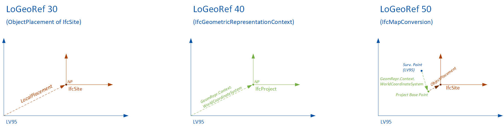
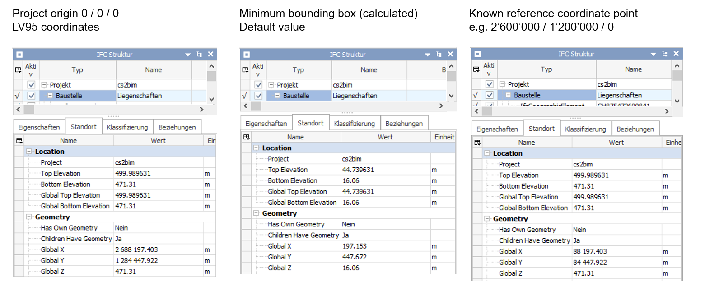
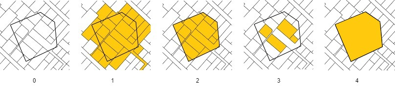
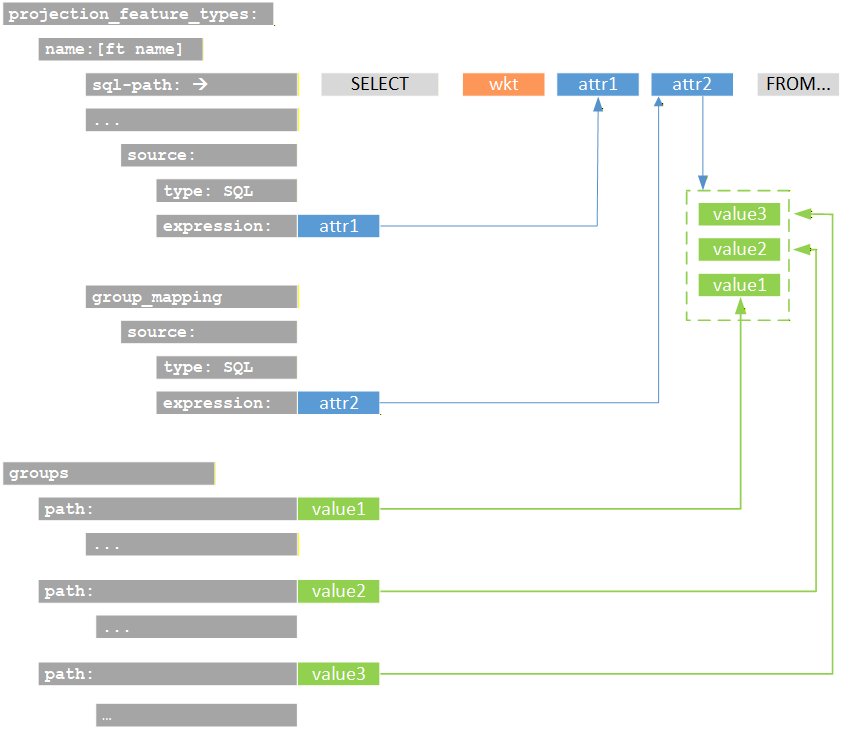

4 Configuration Overview
The application is configured using a YAML file. Below, you’ll find an overview of the main configuration concepts. You can find the full and more technical documentation of the configuration file here.
The configuration is divided into several sections:
- Logging
Set the application’s log level (e.g., DEBUG, INFO). - Connections
Provide connection settings for Redis and Database access. - Internationalization (i18n)
Specify translation files to support multiple languages. - External Data (STAC, TIN)
Configure where the application remote data sources (STAC APIs) can be found. - IFC Export
Define how data will be structured and exported to IFC.
The concepts and principles of the configuration and the most important parameters are described in the following sections.
4.1 Internationalization Support
The configuration supports referencing translation files for multiple languages. The values affected by translation are fixed and not configurable:
- Attribute values
- Property set names
- Property names
- Property values
- Group names
If a translation key cannot be found, the original value is written unchanged. The following characters are allowed for keys in the table: letters (lowercase), numbers and underscore (_).
Keys derived from dynamic values are generated as follows:
- key = lower_case(key)
- key = remove_special_characters_except_spaces(key)
- key = trim_leading_and_trailing_spaces(key)
- key = replace_sequences_of_spaces_with_single_underscore(key)
Example: “Year ( 1990 )” → “year ( 1990 )” → “year 1990” → “year 1990” → “year_1990”
4.2 External Data
The projection feature types require a DTM file source provided via a STAC API. The building feature types require a CityGML file source. These URLs must be defined in the STAC configuration.
4.2.1 DTM
Needs to be set if there are projection feature types configured. Expected asset properties:
- type = application/x.ascii-xyz+zip
- eo:gsd / gsd = config.tin.grid_size
4.2.2 Buildings
Needs to be set if there are building feature types configured. Expected asset properties:
- type = application/x.gml+zip
4.3 IFC Export
4.3.1 Geo referencing
You can provide the so-called “Level of Georeferencing” (LoGeoRef), according to (Clemen&Görne, 2019) [^LoGeoRef].
The different levels represent different methods of defining information about georeferencing in IFC.
Supported values are:
- LO_GEO_REF_30
- IfcObjectPlacement of an IfcSpatialStructureElement contains georeferencing
- Suitability for local projects on a smaller scale
- IFC 2.3
- LO_GEO_REF_40
- IfcGeometricRepresentation context of IfcProject contains georeferencing
- Suited for larger infrastructure projects
- IFC 2.3
- LO_GEO_REF_50
- IfcMapConversion defines georeferencing of the “SurveyPoint”, including coordinate system parameters
- Suited for large-scale and linear project expansions
- IFC 4.0

Coordinates and Offsets
You can provide a project origin in LV95 coordinates (Easting, Northing, Height). The project origin can also be set to (0,0,0).
If not provided, the system sets a project origin in the lower left corner on a minimum bounding box of the perimeter.

4.3.2 Feature types
A “feature type” is the definition of a set of objects that are exported as instances of an IFC entity with common definitions. Each feature type is defined through a configuration that describes how data from the GIS database is transformed into IFC instances. For every configured feature type, a set of instances is created. Currently, three different kinds of feature types are supported. They differ according to the type of geometry conversion.
Projection (projection_feature_types)
Projections are feature types that generate IFC structures by projecting 2D areas onto a 3D surface (in this case the terrain model).Building (building_feature_types)
Buildings are feature types that are generated by transforming 3D building geometries from CityGML into IFC structures.Extrusion (extrusion_feature_types)
Extrusions are feature types that are generated by extruding 2D areas along a polyline. Five different cross-section types (CIRCLE, EGG, RECTANGLE, POLYGON_GLOBAL, POLYGON_LOCAL) and three different extrusion types (POLYLINE (horizontal) , SURFACE (vertical) and POINT (vertical)) are supported.
4.3.3 SQL
The basis of a feature type is a SQL statement, that selects data from a geodata source. The SQL statement is stored in a separate file. It is executed at the beginning of constructing of the feature type instances. It determines what objects to create for the feature type. The input parameter “%(polygon)s” is the input WKT string of the application. It is expected that this input parameter is used to select the relevant feature type instances for the request. Each result row is converted into an IFC instance. The required return columns differ from feature type to feature type.
- Projection: Expects a column with the name
wkt[2d_wkt_polygon] that represents the area to be projected. - Building: Expects a column with the name
egid[number] that contains the egid number to identify the building. - Extrusion: Extrusions are a bit more complicated because there are different cross-sections and extrusion types that require different columns. The columns
cross_section[cross_section_type] andextrusion_type[extrusion_type] are always mandatory and used to identify the cross-section and extrusion type. Depending on thecross_sectionandextrusion_typeadditional columns are needed. See this section for more details.
Additional columns can be included to provide values that can be referenced in the attribute, property, or group configurations, see this section for more details.
Selecting the data by SQL is flexible and can be done in various ways. Specifically use geometry functions (e.g. intersections) and aggregation functions. There are some examples in the sql folder.

- The input polygon
- All areas that intersect with the polygon are included (Parcels, Land covers, Land covers buildings)
- All areas are cut off at the border of the polygon (Parcels intersection, Land covers intersection)
- All areas that are fully contained by the polygon are included (Parcels contains, Land covers contains)
- The entire area of the input polygon without subdivisions (Polygon)
Useful postgis functions
ST_GeomFromText: Constructs a PostGIS ST_Geometry object
ST_AsText: Returns the OGC WKT representation of the geometry
ST_CurveToLine: Converts a given geometry to a linear geometry
ST_Intersects: Returns true if two geometries intersect. Geometries intersect if they have any point in common. ST_Contains: Returns true if the first geometry contains the second.
Hint: The wildcard character ‘%’ needs to be escaped like this ‘%%’.
4.3.4 Entity Mapping
Specifies the IFC entity used to create instances for feature types. The configuration expects a string containing the exact name of the entity as defined in the IFC schema.
Not all entities are supported by all IFC versions, so only entities that are available across the supported versions should be used. An exception to this rule applies to IfcBuiltSystem / IfcBuildingSystem. If either of these entities is configured, the system will automatically create the appropriate entity for the selected IFC version.
Incorrect or unsupported entity names will result in errors. The responsibility for providing a valid and compatible entity name lies with the user.
4.3.5 Attributes, properties and group mappings
To define a value for an attribute, property or group name, the source needs to be defined. The source is defined by a type and an expression. There are three different types of sources to evaluate the values of attributes, properties and group names:
SQL: The value is determined by an attribute of the SQL statement.STATIC: The value is static and defined directly in the configurationCITY_GML(for buildins feature types only): The value is determined by an XPath expression
It is important that the expression matches the type being used. An SQL source expects a column name to retrieve a value from the SQL result set. A CityGML source expects an XPath expression that selects the desired value (starting from bldg:Building). The static source does not resolve any value and therefore has no requirements for the expression.
Attributes cannot be freely selected and depend on the ifc entity that is selected. If a configured attribute does not exist, it is ignored. Properties that are configured but not found as output column in the sql result are also ignored.
The following figure shows schematically the attributes of the sql statement and their referene as parameters in the configuration.

4.3.6 Spatial Structure Mapping
Specifies the IFC spatial structure element that a created instance is linked to. Spatial structures are shared among instances if their attribute or property values are identical — even across different feature types. As a result, the total number of spatial structures ranges from one up to the number of feature type instances.
4.3.7 Entity Type Mapping
Specifies an IFC entity type linked to each created instance. Entity types are shared among other instances of this feature type if their attribute or property values are identical. Entity types are only supported by certain IFC entities. The responsibility for configuring this correctly lies with the user. Configured entity types that do not exist are ignored. Attributes cannot be freely selected and depend on the ifc entity that is selected. If a configured attribute does not exist, it is ignored.
4.3.8 Groups
Each feature type instance can be assigned to one or more groups. This configuration is optional—if omitted, no group assignment will be made. For every group assignment, the system creates an IFC group based on the specified group configuration, including its parameters such as entity and any number of attributes or properties. If no configuration exists for a given assigned value, the system will generate a basic IFC group entity without additional attributes or properties. When defining groups, the “.” character can be used to create nested group structures.
For example, the group “Amtliche Vermessung.Bodenbedeckung.befestigt” results in the creation of three nested groups. The feature type instances are assigned to the final group in this hierarchy.
- Amtliche Vermessung
- Bodenbedeckung
- befestigt
- Feature type instance 1
- Feature type instance 2
- Feature type instance 3
- …
- befestigt
- Bodenbedeckung
4.3.9 Special configurations (feature type specific)
In this section some feature type specific configurations and concepts are described.
4.3.9.1 Building (building_feature_type)
The processing of buildings from CityGML is based on the EGID (a unique identification for all buildings in Switzerland). In the first step, all EGID located within the processing perimeter are identified. To do this, the EGID are queried using an SQL statement from a geodata source within the database (attribute egid in the SQL statement).
In a second step, the corresponding building objects are identified within the CityGML files. This is done via an attributive selection, i.e., the EGID must be included in the CityGML records. The parameter egid_xpath defines the XQuery expression through which the EGID number is defined within the CityGML objects.
The parameter egid_xpath defines an XQuery expression used to query a geometry definition within CityGML. This parameter can be used to define both the LOG to be processed and the BuildingParts to be processed by formulating the appropriate XQuery expressions.
4.3.9.2 Extrusion (extrusion_feature_type)
Extrusions are a bit more complicated because there are different cross-sections and extrusion types that require different columns. The columns cross_section [cross_section_type] and extrusion_type [extrusion_type] are always mandatory and used to identify the cross-section and extrusion type. See this table in this section that shows the valid values for these columns and the additional required columns for each valid combination.
For a list of all extrusion parameters see also this table.